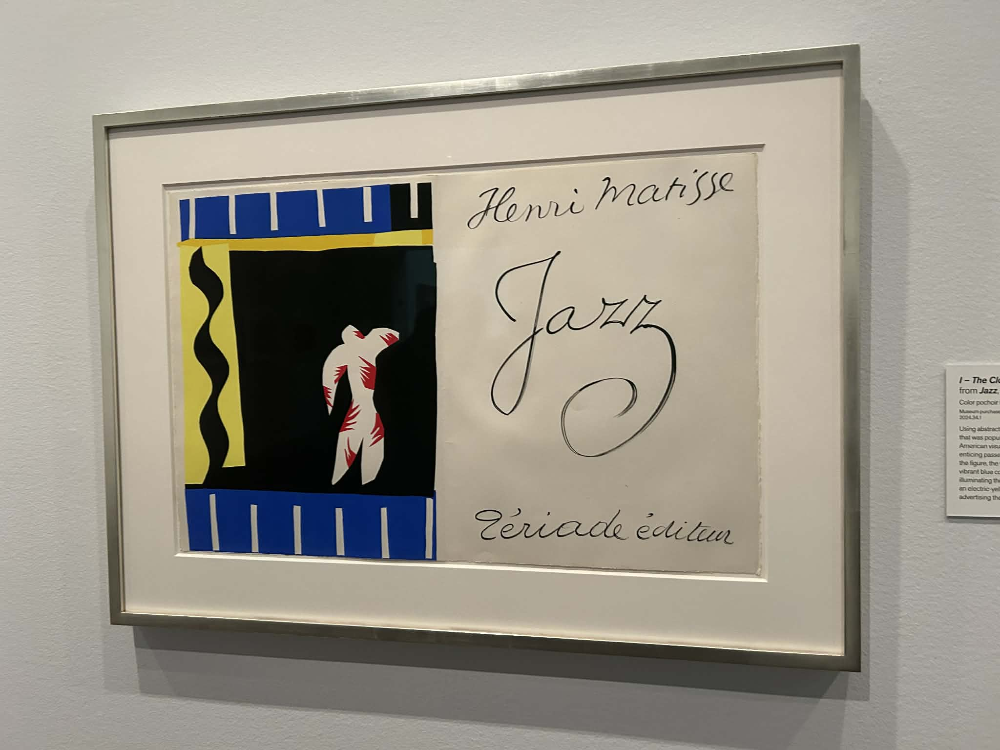
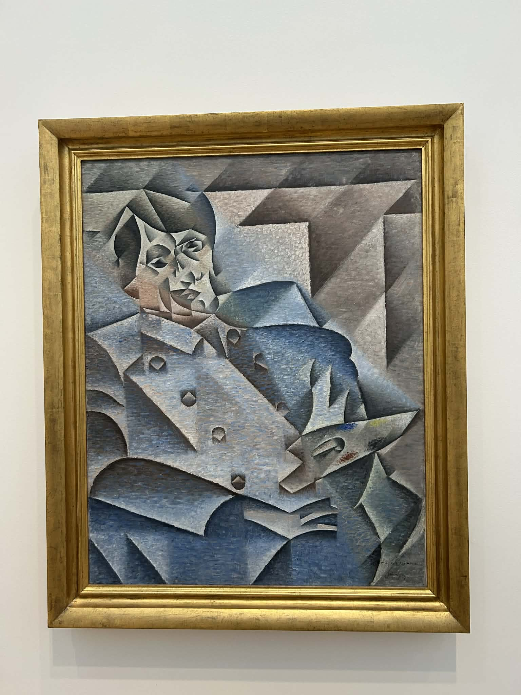
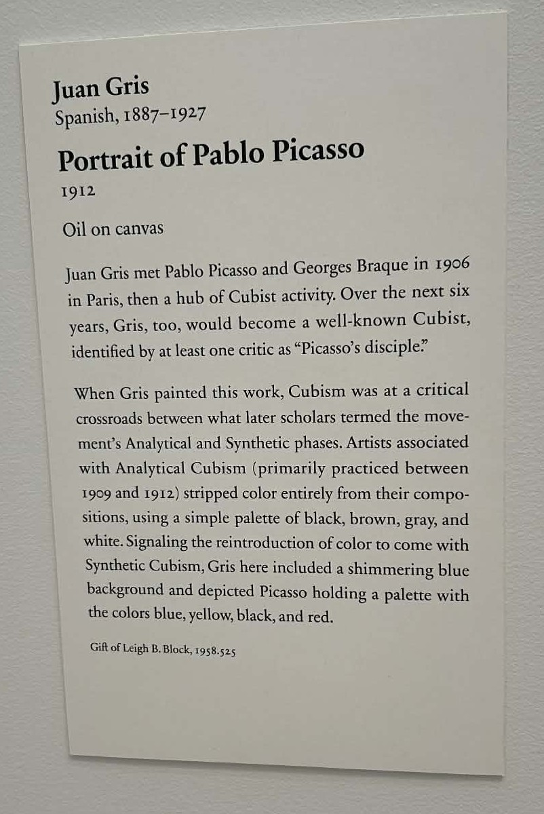

日常雜感
距離上次更新網站又過了很久，中間發生很多事情，一部分是人際關係，另一大部分也是在跟論文膠著。今天放個假，把幾個有趣的事情跟體悟寫下來吧。
1 自學藝術（史）
在美國看了很多世界級的美術館跟作品之後，才漸漸感受到藝術品（主要是畫作）的美，也第一次感受到被畫作震撼（？）的感覺。仔細想想，藝術和人類歷史似乎有某種緊密的連結，而且我從未認真思考過藝術之於社會跟歷史的定位，遂開始想學習藝術史跟欣賞藝術的方式，希望未來欣賞畫作時，除了單純的視覺震撼，也可以看到技巧跟背後的故事，乃至當下的歷史背景等。

這聽起來好像太高大尚了。簡單來說，我寒假花了點時間搜尋入門藝術史的書籍。理想的情況是找到一本可以綜觀全局（包含藝術史跟社會背景），又可以適時深入幾件重要藝術品的導論書。幾經搜索，若論大眾取向的導論書，內容大多是快速且膚淺地帶過大量的著名作品，缺乏更細緻的歷史、背景、技法…等的探討。若要更高深點，又變成要讀大塊頭，都是學術作品跟教科書，而且內容包山包海。我猜測可能是每一件藝術品都可以大書特書，讓專業書籍的頁數容易暴增，導致難以綜觀全局的方式編纂。
其實我也願意讀教科書，但許多經典書我又覺得他們太「純藝術」取向，只討論藝術流派演變、藝術家的特色、作品技法的突破，但極度缺乏對社會跟歷史背景的討論；這方面Gombrich的《The Story of Art》就是個典型，讀起來讓我有很多疑惑。


最後我在某個Reddit討論上找到幾本書，雖然感覺還是沒有我最滿意的一本書，但融會貫通應該還是可以達到我學習的目標：
- Carol Strickland的《The Annotated Mona Lisa》：是篇幅很短的導論書，也是主打純藝術史，但因為內容比較深一點點，而且作者放了許多統整表格跟時間軸，可以幫助建立基本的藝術史Big Picture，所以我打算先讀這本。
- Ernst Gombrich的《The Story of Art》：這本據說是藝術相關科系的經典參考書，因為是本大塊頭，我不打算從頭讀到尾，而是在閱讀The Annotated Mona Lisa有疑惑或想進一步了解時參考。這本的內容雖然鉅細靡遺，對每個藝術流派、著名藝術家、著名作品都有更學術性的分析和比較，但因為作者主打是給有興趣的newcomer閱讀，所以風格更故事化跟散文化，沒有結構化地呈現他的論點，要系統性地學習還是要靠自己整理。
- Julian Bell《Mirror of the World: A New History of Art》：這本可能更符合我的目的，他主打的是跨文化比較的世界藝術史，Reddit上討論串說這本會比較各地的藝術品，不像Gombrich幾乎都是西方中心的敘事。這點從The Story of Art的目錄可知一二，他對於亞洲藝術大概只有前段古代的部分提到，後面主力都放在西方藝術上。
- John Berger《Ways of Seeing》：由電視節目改寫而成，注重的是藝術背後的權力結構，如性別、資本主義…等，應該很適合跟西方中心的藝術史書做個比較。我也是看到這才知道男性凝視一詞來自此書。
到了今天已經三月了，我其實只讀了The Annotated Mona Lisa和The Story of Art前面幾章，大概到文藝復興，不知甚麼時候才會有機會反思我「觀看的方式」。
2 一些（冷）知識
跟上次一樣，紀錄幾個覺得有趣的（冷）知識，回答了一些我沒想過的、但重要（嗎？）的問題。
灰塵的組成
看到Be Smart有個短影音，說家裡灰塵的組成到底是甚麼？有個常見的說法是灰塵裡面大多數都是人體的毛髮或皮膚細胞。其實不然，有一份以美國中西部家庭灰塵為例的研究指出，灰塵的組成會跟周遭環境相關。裡面有人體毛屑、微生物，但有2/3是來自戶外，包含汙染物、花粉、甚至有隕石的粉塵。換言之，灰塵只是周遭環境的縮影。
看完這影片沒多久，見到有人在threads上說要列出冷知識，其中一條也是寫著「家中的灰塵大多是人體細胞」（之類的），雖然我嘗試用Be Smart的影片留言闢謠，但顯然大家比較在意看似簡單又sensational的假訊息，原文獲得超多讚數。
真好奇最初到底是誰胡謅出家裡的灰塵都是人體細胞的？而且又是怎麼在美國跟台灣人中流行的？
左撇子
PBS Eon有個影片討論為何人們多是右撇子？似乎從化石遺跡就可以觀察到，人類的老祖宗大多是右撇子。1 然而，到底為甚麼大多人是右撇子？而且為甚麼總是有一定比例的左撇子呢？
要回答右撇子人數為何更多，影片中比較決定性的證據是腦裡面的「BA44」腦區，這裡負責工具操作，而且這正好在腦的左半球，因此右手自然成為大多數人的慣用手。
那為何還是有左撇子？這比較難以解釋，影片說可能是左撇子在某些領域可以有出乎意料的優勢，讓某些人為了生存演化出慣用左手，譬如格鬥時出左拳可以出其不意地擊倒對手。同樣地，這也可以解釋為何左撇子不會成為多數，因為倘若成為多數，左撇子優勢就消失了。
垃圾回收與環保
有陣子一直被推薦垃圾回收的影片，還都是在吃飯時看，不得不說有點倒胃口。這我去年考英文考試跟GRE時看了很多，無法一一引用，但讓我對垃圾回收的觀點有所改變。
過去我一直有這個belief：「垃圾好好分類之後就可以回收，多少可以再利用，這有助於環保。」實際上這並資源回收運作的方式，原因大概有下列幾點。
首先，現代的包裝科技太發達，常常是MLP （Multi-Layer Product），裡面可能有數十層材料，這會讓分離的程序極其複雜，導致回收非常困難，成本極高。舉牛奶紙盒為例，蓋子塑膠先不管，內層要防水防油防氧化可能要幾層特殊金屬和塗層，接著要影印廠牌跟資訊要紙要油墨，外層要防止油墨脫落也要幾層塑膠。2 這一切混合在一起，讓生活中許多包裝 ⸺從牛奶盒跟飲料罐、到芋片包裝，到便當盒⸺都難以回收。
有科學家嘗試發展針對特定幾種常見包裝的回收方式，但直至202X年，回收量都奇低無比。至於這些大廠牌為何只會做包裝而不會回收呢？我看的影片沒有討論，但顯然是沒有人關心。3
我還看到加拿大電視頻道測試大賣場中Compostable商品（e.g. 紙杯或餐具）的分解速度，發現實際上都要在特殊工業的堆肥環境才能分解，不如這些材料宣稱的那樣厲害。那如果拿去資源回收廠呢？至少加拿大官方的回收廠認為他們也無力達到這類材料宣稱的環境，最後要不是掩埋就是燒掉。換言之，你花了更多錢買可分解的餐具想做環保，實際上只是無意義地堆高成本，沒有愛到地球。
即便這些影片關注的都是歐美國家，台灣可能狀況不同，但我不認為台灣有可能進步到多少。4 看到這裡，我總覺得這種重要的議題怎麼完全沒人關注？或是沒有一個合理的機制在嘗試解決，可是我自己也無法投入這種議題，只有一種無力感，ㄏㄏ。
3 關於做研究
3.1 學術貢獻是甚麼？
過去常常閱讀網路上的博班或是學術心法，沒想到有一天我會寫點相關的東西。但我也不是要寫給其他人的建議，而是一些自己的感受。
小時候（=大學）會想做研究純粹是對了解社會、經濟、歷史…等有興趣，不過畢竟那些被我們讀到的都是大師的作品，裡面展現的是知識的創發，看不到背後的努力跟血汗。那現在碩士班，實際要做的大多是血汗努力，卻不保證有多好的insight，光要達到文獻上的貢獻可能就不容易了。但這個貢獻到底是甚麼意思呢？若是對理論的貢獻那應該很顯然。然而，貢獻又跟研究者要對話的人群有關。
若是研究某個台灣的政策效果，凡是台灣人大概都會有興趣知道研究結果，所以這份研究對台灣人的貢獻很顯然；然而，這對美國人可能就沒多少意義了。又因為所謂「頂尖期刊」都是歐美，甚至是英美所主導，讓非西方背景的研究者難以單純以研究題材的國家或文化背景作為賣點。
這點我其實是直到去UCB交換才有深刻的體會。教授有義大利人、美國人、德國人…等，但他們都要研究「讓美國人感興趣」的題材。我記得有一位教授說，在美國研究Voter Turnout很重要，但你如果研究一個非洲國家或是南美洲國家的voter turnout？這真的沒人（=沒期刊）在意。反之，有些頂刊文章賣點就只是檢驗一個美國流行的政治議題。
這很現實，而且這侷限了非歐美文化背景研究者可以做的題目，他們的文化霸權透過期刊發表機制間接控制了學者們的題材。或許研究台灣的某個醫療議題真的可以改善制度，但很少年輕台灣研究者會願意投入。
嗯，感覺我也是在寫老生常談，很無趣。不過這就是最近我遇到的問題，我寫的是台灣的議題，但要讓他有發表潛力，就必須塞進理論的框架內，因為我無法以「台灣」本身作為賣點。這種潛在的壓力或許會一直跟著我？不知何時會找到方式消解。
3.2 做研究的效率
以前我就對增加生產力的工具或技巧有點興趣，但始終有一項沒有認真實施，那就是「discipline」。很久以前看EJMR（先不管這個論壇toxic的爭議）有人討論過productive researcher的時間安排。一則留言做了個對「低」生產力學者的描繪，我把google翻譯的結果直接貼在這：
他們睡到很晚才起床，悠閒地洗個澡，比平常花的時間長得多，一邊吃早餐一邊看CNN或其他節目。他們寧願在高峰期開車上班，也不願提早一小時到公司避開壅塞。他們和朋友聊天，在辦公室/部門裡漫無目的地閒逛，或坐在公司的休息區。到了辦公室，他們立刻就開始在電腦上找足球數據或EJMR論壇上的資訊。如果把查看郵件和EJMR論壇貼文是否得到回應的時間都排除在外，午餐前他們大概只完成了一個小時的工作。午餐時間到了，他們吃得很久，可能只花5分鐘和同事討論工作/研究想法，剩下的時間都用來討論誰會被《美國超級名模大賽》淘汰，或者克魯格曼/科克倫有多蠢。下午早些時候，教學/真正的工作才終於開始，大概兩個小時吧。然後就到了下午晚些時候，可能過了兩三個小時他們才覺得在辦公室待的時間夠長了，可以“早點”回家而不用感到內疚，於是他們又開始浪費時間在辦公室裡閒逛，和秘書/同事調情，漫無目的地上網搜索東西。然後到了下午5點半，他們對自己說：“嗯，今天工作還不錯。”
在那「一天」的工作時間裡，這個人實際工作時間只有2到3個小時，其餘7到9個小時都浪費在了無所事事上。然後他們又納悶，為什麼自己每隔一、兩年才能在平庸的期刊上發表一篇論文，甚至更糟。他們不明白，明明“在辦公室待了那麼久”，為什麼工作效率卻不高。
當然，上述工作方式的「反面」是不是大多「頂尖學者」的工作模式？這不是統計結果，不過按照我自己對高生產力的教授的觀察，這應該很接近真實。在台灣，即便是在台大，大家還是願意給指導學生1~2小時的討論時間，這當然很好，但相比之下，在UCB每個教授的Officie Hour（無論是課程、研究討論、還是額外約的）都是以20~30分鐘為單位，至多兩個單位，而且有些會要求學生要先交一份summary來讓他熟悉內容。只給20分鐘著實有點極端了，但那個環境的競爭壓力、工作量、或是他們對自己行程的要求都非常高。在此我沒有要批判台灣的教授不認真，但確實平均的工作強度沒有到世界頂尖學府那麼高。
我記得我第一次看到他們Seminar Speaker的時間安排，真的非常驚訝，印象中早上講者會先用兩個小時跟不同faculty member面談，中午吃飯後開seminar談working paper，下午小憩片刻後接著跟博士生們輪流面談，可能還有領域內的小型seminar。晚餐時間也是跟faculty member到高級餐廳social，這才結束一天的行程。然後，這位講者飛到西岸也不是只來UCB，可能這個禮拜就在西岸各間學校車輪戰。
很極端嗎？這是我想要的生活嗎？我可能不想、也沒能力變成這類頂尖學者，不過這類disciplined的生活型態似乎是長期從事學術工作上必要的。長久以來，我的工作方式非常spontaneous，我總是要靠一點deadline的壓力和一時的衝勁來大量產出。然而，這樣的方式似乎已經無法跟上學術緊湊的步調，AI的發明、同儕的競爭壓力、年底的申請，我認為規律的生活長期來說是比較能保持產出的，尤其是在還年輕的階段。所以，我需要改變了。
這跟另一件事有關，過去我一直沒有全心投入經濟學。這一方面是因為在台灣，即便是一位經濟系碩士生，還是鮮少有人可以整天都用經濟學模型在描述世界，讓我有比較少機會刺激自己思考。此外，台大流行的研究方式也多是2000年以來流行的causal inference風格，這使得這時間後回來台灣的研究者比較不須從事economic model-based的研究，我猜或多或少影響到他們教學的內容。換言之，如果沒有上Jimmy的個體經濟學理論，我大學到碩士班很少看到有人的腦是經濟學模型捏出來的。相比之下，在UCB經濟系，我修到課程的老師字裡行間都充滿著經濟學理論。他們不是單純背誦名詞，像是抽菸有外部效應、某市場是檸檬車市場那樣，而是有一套模型在跑動，可以按照模型的邏輯反覆推論下去。我發現，這曾是我嚮往過、想學習的思考方式，曾幾何時，因為環境中缺乏這樣的學習對象，遂漸漸淡忘了。
3.3 小結
寫到這裡，我想說的是甚麼呢？從論文的貢獻、現實的壓力、還有我有興趣的領域使然，我不能再跟以前一樣東看西看了（e.g.看藝術史之類的），必須要讓自己奉獻到典範之中。
最後，我要澄清一下，我並非有了一股「要全力投入經濟學研究」的衝勁，這仍不是我想像中的discipline。我認為我希望的工作模式是，透過建立如同上班一般的常規，讓我可以定時有固定的產出，避免因為個人外務、心理壓力…等雜事降低了產出。
希望幾個月後我還願意重讀這篇文章，覺得自己有辦到了（flag立好立滿）。
我光是花了幾個小時反覆編輯這篇文章，包括耍廢，就代表我還不夠有discipline。還要繼續努力吧。